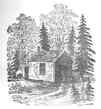

Daryush "Roosh" Valizadeh created ROK in October 2012. You can visit his blog at RooshV.com or follow him on Twitter and Facebook.


I originally read Henry David Thoreau’s Walden when I was about 25 years old. At that time I was so heavily invested in the consumer lifestyle that I was thinking about buying a luxury automobile. Walden made me strongly reconsider that notion, using sound arguments to put me on a minimalist and nomadic path that I’ve sustained since then. I recently re-read the book to see if there was anything I missed the first time around or if my beliefs have changed in the previous decade.
One thing that immediately struck me in my second reading is an arrogance that borders on egomaniacal delusion. He started writing Walden in his late 20’s, yet his tone is one of absolute certainty in finding an obviously superior lifestyle (one that he never re-attempted after the book was published).
Practically, the old have no very important advice to give the young, their own experience has been so partial, and their lives have been such miserable failures, for private reasons, as they must believe; and it may be that they have some faith left which belies that experience, and they are only less young than they were. I have lived some thirty years on this planet, and I have yet to hear the first syllable of valuable or even earnest advice from my seniors. They have told me nothing, and probably cannot tell me anything to the purpose.
Can you imagine a young man coming up to you and saying that his elders have absolutely nothing of use to say? You’d probably tell him to go right back to the cabin he is living in, and I’m sure many people actually did just that, and yet not even two pages after the above passage he cites a quote from Confucius that actually condemns his own behavior: “To know that we know what we know, and that we do not know what we do not know, that is true knowledge.” Unless you lived life exactly as he prescribed, you were some kind of fool or peasant, but only the life he himself role-played for not more than two years.
In Walden, Thoreau used an extended camping trip as a device to push individualist notions of the Enlightenment age to browbeat people into living his lifestyle. It’s no surprise that he was not well-liked by his peers, though if you put his arrogance aside, he did a fine job describing the problem of modern society, especially one based on blind consumerism that does nothing to further the development of man. While his anti-family and anti-tradition solutions can’t be applied but for a tiny percentage of naturally hermetic men, his cultural analysis makes this book worth reading, especially for men who need a wake-up call from living an empty modern lifestyle.
I see young men, my townsmen, whose misfortune it is to have inherited farms, houses, barns, cattle, and farming tools; for these are more easily acquired than got rid of. Better if they had been born in the open pasture and suckled by a wolf, that they might have seen with clearer eyes what field they were called to labor in. Who made them serfs of the soil? Why should they eat their sixty acres, when man is condemned to eat only his peck of dirt? Why should they begin digging their graves as soon as they are born?
[…]
Most men, even in this comparatively free country, through mere ignorance and mistake, are so occupied with the factitious cares and superfluously coarse labors of life that its finer fruits cannot be plucked by them. (…) He has no time to be anything but a machine.
[…]
However, I should never have broken a horse or bull and taken him to board for any work he might do for me, for fear I should become a horseman or a herdsman merely; and if society seems to be the gainer by so doing, are we certain that what is one man’s gain is not another’s loss, and that the stable-boy has equal cause with his master to be satisfied?
[…]
Most of the stone a nation hammers goes toward its tomb only. It buries itself alive. As for the Pyramids, there is nothing to wonder at in them so much as the fact that so many men could be found degraded enough to spend their lives constructing a tomb for some ambitious booby, whom it would have been wiser and manlier to have drowned in the Nile, and then given his body to the dogs.
[…]
Many are concerned about the monuments of the West and the East—to know who built them. For my part, I should like to know who in those days did not build them—who were above such trifling.
Most of the luxuries, and many of the so-called comforts of life, are not only not indispensable, but positive hindrances to the elevation of mankind. With respect to luxuries and comforts, the wisest have ever lived a more simple and meagre life than the poor.
It is an interesting question how far men would retain their relative rank if they were divested of their clothes. Could you, in such a case, tell surely of any company of civilized men which belonged to the most respected class? When Madam Pfeiffer, in her adventurous travels round the world, from east to west, had got so near home as Asiatic Russia, she says that she felt the necessity of wearing other than a travelling dress, when she went to meet the authorities, for she “was now in a civilized country, where… people are judged of by their clothes.” Even in our democratic New England towns the accidental possession of wealth, and its manifestation in dress and equipage alone, obtain for the possessor almost universal respect.
While civilization has been improving our houses, it has not equally improved the men who are to inhabit them. It has created palaces, but it was not so easy to create noblemen and kings. And if the civilized man’s pursuits are no worthier than the savage’s, if he is employed the greater part of his life in obtaining gross necessaries and comforts merely, why should he have a better dwelling than the former?
[…]
“But,” says one, “you do not mean that the students should go to work with their hands instead of their heads?” I do not mean that exactly, but I mean something which he might think a good deal like that; I mean that they should not play life, or study it merely, while the community supports them at this expensive game, but earnestly live it from beginning to end. How could youths better learn to live than by at once trying the experiment of living?
[…]
Every man is the builder of a temple, called his body, to the god he worships, after a style purely his own, nor can he get off by hammering marble instead. We are all sculptors and painters, and our material is our own flesh and blood and bones. Any nobleness begins at once to refine a man’s features, any meanness or sensuality to imbrute them.
I went to the woods because I wished to live deliberately, to front only the essential facts of life, and see if I could not learn what it had to teach, and not, when I came to die, discover that I had not lived. I did not wish to live what was not life, living is so dear; nor did I wish to practise resignation, unless it was quite necessary. I wanted to live deep and suck out all the marrow of life, to live so sturdily and Spartan-like as to put to rout all that was not life, to cut a broad swath and shave close, to drive life into a corner, and reduce it to its lowest terms, and, if it proved to be mean, why then to get the whole and genuine meanness of it, and publish its meanness to the world; or if it were sublime, to know it by experience, and be able to give a true account of it in my next excursion.
[…]
There is some of the same fitness in a man’s building his own house that there is in a bird’s building its own nest. Who knows but if men constructed their dwellings with their own hands, and provided food for themselves and families simply and honestly enough, the poetic faculty would be universally developed, as birds universally sing when they are so engaged? But alas! we do like cowbirds and cuckoos, which lay their eggs in nests which other birds have built, and cheer no traveler with their chattering and unmusical notes.
[…]
An honest man has hardly need to count more than his ten fingers, or in extreme cases he may add his ten toes, and lump the rest. Simplicity, simplicity, simplicity! I say, let your affairs be as two or three, and not a hundred or a thousand; instead of a million count half a dozen, and keep your accounts on your thumb-nail.
There are a thousand hacking at the branches of evil to one who is striking at the root, and it may be that he who bestows the largest amount of time and money on the needy is doing the most by his mode of life to produce that misery which he strives in vain to relieve.
The millions are awake enough for physical labor; but only one in a million is awake enough for effective intellectual exertion, only one in a hundred millions to a poetic or divine life. To be awake is to be alive. I have never yet met a man who was quite awake.
And I am sure that I never read any memorable news in a newspaper. If we read of one man robbed, or murdered, or killed by accident, or one house burned, or one vessel wrecked, or one steamboat blown up, or one cow run over on the Western Railroad, or one mad dog killed, or one lot of grasshoppers in the winter—we never need read of another. One is enough. If you are acquainted with the principle, what do you care for a myriad instances and applications? To a philosopher all news, as it is called, is gossip, and they who edit and read it are old women over their tea.
A man, any man, will go considerably out of his way to pick up a silver dollar; but here are golden words, which the wisest men of antiquity have uttered, and whose worth the wise of every succeeding age have assured us of;—and yet we learn to read only as far as Easy Reading, the primers and class-books, and when we leave school, the “Little Reading,” and story-books, which are for boys and beginners; and our reading, our conversation and thinking, are all on a very low level, worthy only of pygmies and manikins.
He thinks the solution to a culture of anti-intellectualism is to encourage reading and open more schools, but we’ve done that in the 150 years since his book was written and the actual result has been a decrease of intellectualism. It’s not the availability of books or idea that is the problem, but the dumbing of minds into passive receptacles of mass-produced slop.
Thoreau genuinely believed that his complaints could be solved by a tweak here or there, but he did not understand that human beings seek the path of least resistance, and when they are presented with a classical book of some sort versus getting attention on Facebook by uploading pictures of themselves, they will always pick the latter. He thought he lived at the lowest point of America’s intellectualism, but actually lived at its height.
I find it wholesome to be alone the greater part of the time. To be in company, even with the best, is soon wearisome and dissipating. I love to be alone. I never found the companion that was so companionable as solitude. We are for the most part more lonely when we go abroad among men than when we stay in our chambers.

I believe that water is the only drink for a wise man; wine is not so noble a liquor; and think of dashing the hopes of a morning with a cup of warm coffee, or of an evening with a dish of tea! Ah, how low I fall when I am tempted by them! Even music may be intoxicating. Such apparently slight causes destroyed Greece and Rome, and will destroy England and America.
The copy of Walden I had also included his famous essay Civil Disobedience, which purportedly inspired the likes of Gandhi and Martin Luther King, Jr.
Under a government which imprisons any unjustly, the true place for a just man is also a prison.
[…]
A minority is powerless while it conforms to the majority; it is not even a minority then; but it is irresistible when it clogs by its whole weight.
[…]
But the rich man… is always sold to the institution which makes him rich. Absolutely speaking, the more money, the less virtue; for money comes between a man and his objects, and obtains them for him; and it was certainly no great virtue to obtain it.
[…]
For my own part, I should not like to think that I ever rely on the protection of the State. But, if I deny the authority of the State when it presents its tax-bill, it will soon take and waste all my property, and so harass me and my children without end. This is hard. This makes it impossible for a man to live honestly, and at the same time comfortably, in outward respects.
One of the reasons that Walden persists in popularity, beyond its message of “simple living” in an increasingly complex world, is that it serves as one of the best natural experiences ever recorded. It’s a breath of fresh of air to read an outdoors tale while modern society continues its blind descent into worshiping at the altar of cosmopolitanism and technology to solve all problems of human existence. At the same time, I don’t know how seriously I can take Thoreau about his prescription of living in the woods. He sang high praises for nature and solitude but ultimately decided, after two years, to permanently live away from nature and solitude. Maybe he was trolling?
Thoreau gets mixed reviews to this day, and I believe it’s not because of his message but his abrasive contempt and hypocrisy for not living a life that he suggested for others. Had he been a bit more humble and genuine, I have no doubt his work could have at least equaled that of his mentor, Ralph Waldo Emerson, who is considered an American hero by many. In spite of that complaint, this book does have tremendous value, especially the first half, and should be read by men who have gotten sucked up by a consumer tidal wave, and who need to be reminded of the folly of that path.
Read More: “Walden” on Amazon